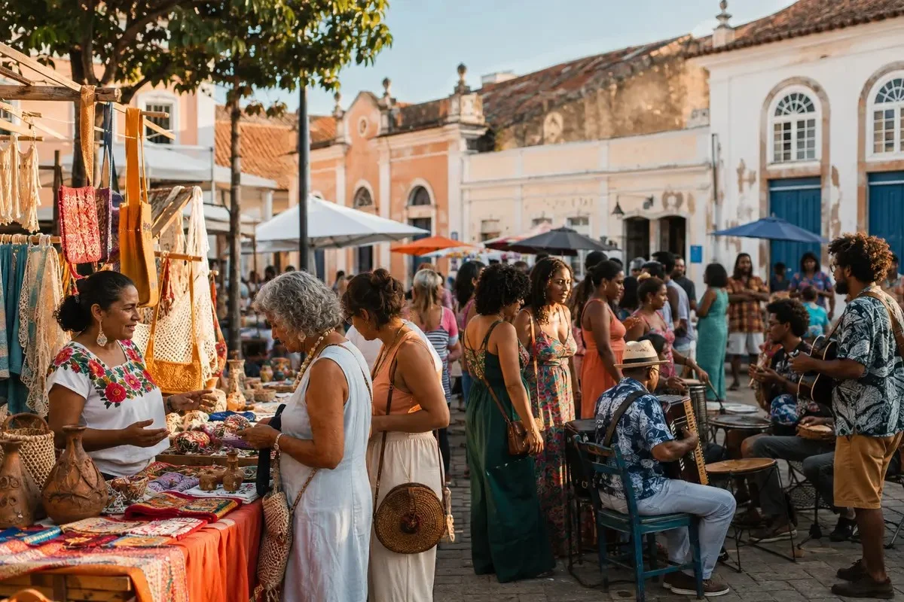
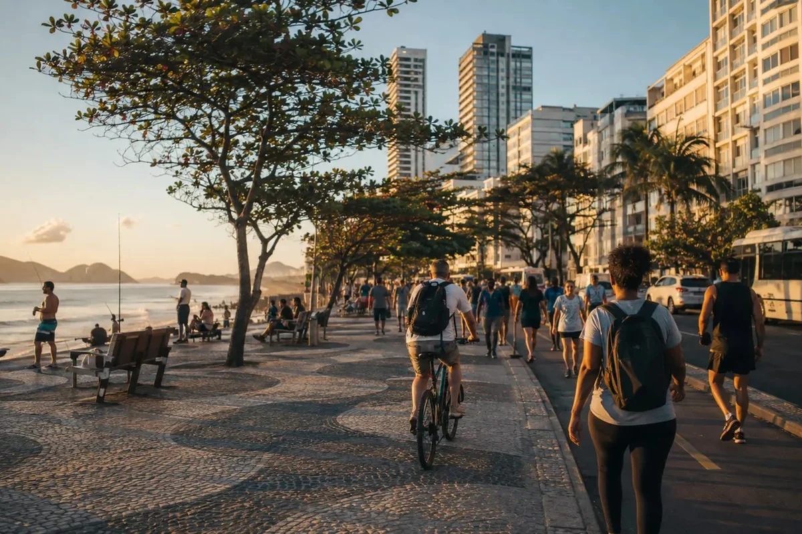
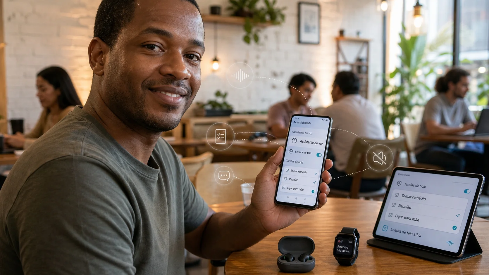
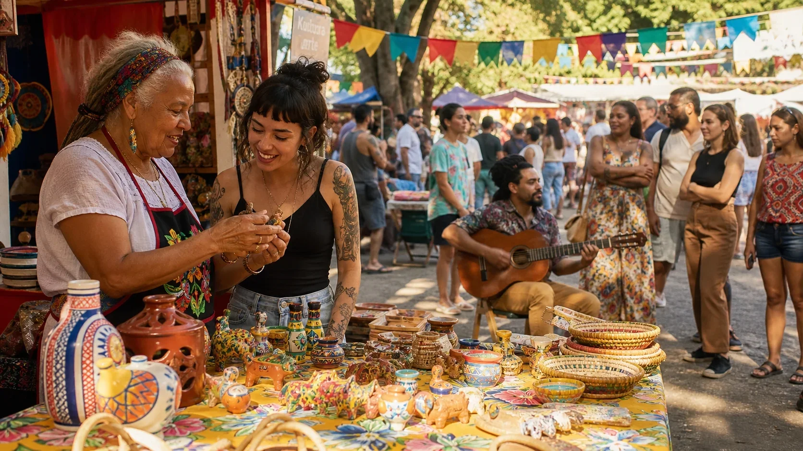

Boas ideias estão redesenhando a vida nos bairros
Conheça iniciativas que transformam espaços comuns em lugares de encontro, cultura e novas possibilidades.
Por Redação • 8 min de leitura
Conheça iniciativas que transformam espaços comuns em lugares de encontro, cultura e novas possibilidades.
Por Redação • 8 min de leitura
Tecnologia
Ferramentas acessíveis ajudam empreendedores a ganhar tempo sem perder o toque humano.
Há 35 min Ler notícia →

Cultura
Um passeio por cores, sabores e histórias que mantêm a cultura local em movimento.
Há 1 hora Ler notícia →
Brasil
Empreendedores de diferentes regiões usam tecnologia para alcançar novos públicos.
Há 2 horas Ler notícia →
Tenha acesso a conteúdos exclusivos, resumo diário e uma experiência completa para acompanhar o que realmente importa.
Conteúdos exclusivos • Resumo diário • Experiência sem anúncios

Brasil
Conheça iniciativas que transformam espaços comuns em lugares de encontro, cultura e novas possibilidades.
Ler notícia →
Tecnologia
Novas ferramentas apostam em acessibilidade, organização e integração entre dispositivos.
Ler notícia →
Cultura
Feiras independentes criam novos espaços para música, gastronomia e economia criativa.
Ler notícia →